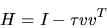
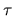
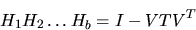
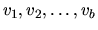
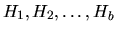

Next: Eigenvalue Problems
Up: Examples of Block Algorithms
Previous: Factorizations for Solving Linear
Contents
Index
QR Factorization
The traditional algorithm for QR
factorization is based on the use of
elementary Householder
matrices of the general form

where v is a column vector and 
is a scalar.
This leads to an algorithm with very good vector performance, especially
if coded to use Level 2 BLAS.
The key to developing a block form of this algorithm is to represent a
product
of b elementary Householder matrices of order n as a block
form of a Householder matrix. This can be done in
various ways.
LAPACK uses the following form [90]:

where V is an n-by-b matrix whose columns are the individual vectors

associated with the Householder matrices
,
and T is an upper triangular matrix of order b.
Extra work is required to compute the elements of T, but once again this
is compensated for by the greater speed of applying the block form.
Table 3.10
summarizes results obtained with the LAPACK routine DGEQRF.
Table 3.10:
Speed in megaflops of DGEQRF for square matrices of order n
| |
No. of |
Block |
Values of n |
| |
processors |
size |
100 |
1000 |
| Dec Alpha Miata |
1 |
28 |
141 |
363 |
| Compaq AlphaServer DS-20 |
1 |
28 |
326 |
444 |
| IBM Power 3 |
1 |
32 |
244 |
559 |
| IBM PowerPC |
1 |
52 |
45 |
127 |
| Intel Pentium II |
1 |
40 |
113 |
250 |
| Intel Pentium III |
1 |
40 |
135 |
297 |
| SGI Origin 2000 |
1 |
64 |
173 |
451 |
| SGI Origin 2000 |
4 |
64 |
55 |
766 |
| Sun Ultra 2 |
1 |
64 |
20 |
230 |
| Sun Enterprise 450 |
1 |
64 |
48 |
329 |
Next: Eigenvalue Problems
Up: Examples of Block Algorithms
Previous: Factorizations for Solving Linear
Contents
Index
Susan Blackford
1999-10-01